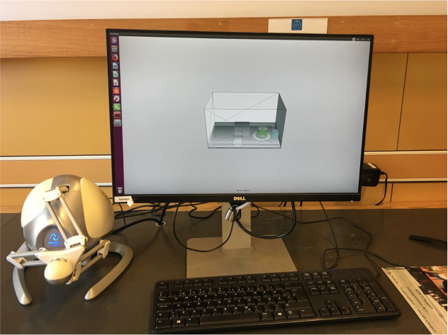
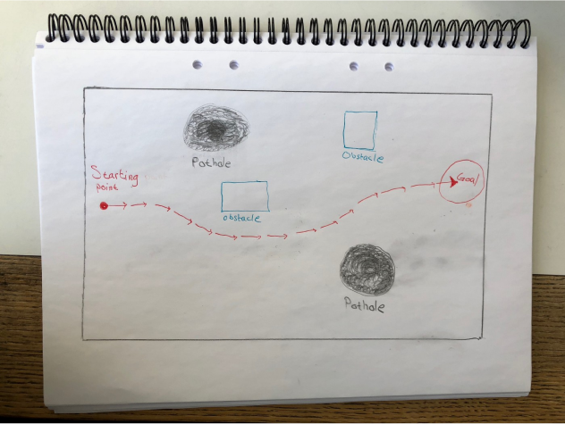

WORK
HAPTICS

This project was performed for the course Haptics, Tactile and Tangible Interaction, spring 2018. We investigated which of the auditory feedback, haptic feedback, or a combination of them is most helpful in guiding a user through a non-visual virtual environment. A game was developed in order to evaluate this. The game consist of a field which the player must traverse.

The starting point is on the left side and the finish is on the right side. On the field, there are holes that the player must avoid. The player gets a warning (audio, vibration, or a combination of both) when approaching a pothole. If the player falls down to the pothole, he/she must restart the game. There are also obstacles on the path of the player. These blocks the way for the player but they also have a function. As the player are not allowed to see the screen, the obstacles can help them remember where he/she got stuck and try to avoid that path next time.
The player used the Novint Falcon, a haptic device that can provide 3 Degree of Freedom (DOF) control and force feedback.